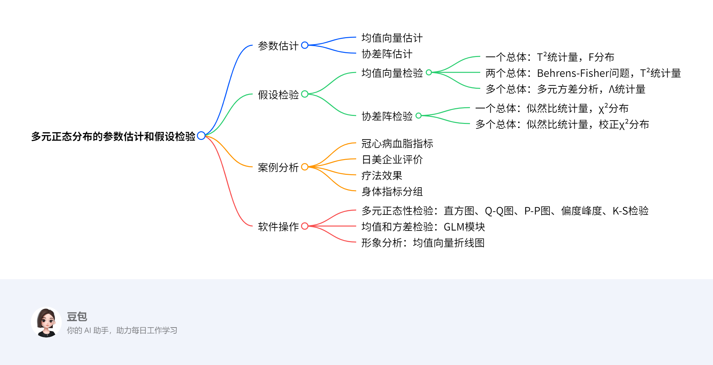

第五章：多元正态分布的参数估计和假设检验¶
概览¶
一段话总结¶
文档聚焦多元正态分布的参数估计与假设检验，参数估计涵盖均值向量和协差阵的极大似然估计等内容；假设检验包括均值向量（一个、两个及多个总体，如借助T²统计量、多元方差分析等）和协差阵（一个及多个总体，基于似然比统计量）的检验，还通过冠心病血脂指标、日美在华投资企业评价等案例分析，并介绍了SPSS中多元正态性检验（如直方图、Q-Q图等）、均值和方差检验及形象分析的软件操作步骤，关键信息如检验统计量、分布及案例结论等已加粗突出。
思维导图¶

详细总结¶
5.1 多元正态分布的参数估计¶
- 均值向量的估计：通过样本均值向量进行估计，样本均值向量是总体均值向量的极大似然估计和无偏估计。
- 协差阵的估计：样本协差阵是总体协差阵的极大似然估计，但需注意其无偏性调整。
5.2 多元正态分布的假设检验¶
5.2.1 均值向量的检验¶
| 检验类型 | 原假设 | 统计量 | 分布 | 案例应用 |
|---|---|---|---|---|
| 一个总体 | \(H_0:μ=μ_0\) | \(T^2=n( \bar{X}-μ_0 )^T S^{-1}( \bar{X}-μ_0 )\) | \(\frac{(n-1)-p+1}{(n-1)p}T^2 \sim F(p,n-p)\) | 例5.1：冠心病血脂指标与正常均值比较 |
| 两个总体 | \(H_0:μ_1=μ_2\) | \(T^2=\frac{nm}{n+m}( \bar{X}-\bar{Y} )^T S_p^{-1}( \bar{X}-\bar{Y} )\) | \(\frac{(n+m-2)-p+1}{(n+m-2)p}T^2 \sim F(p,n+m-p-1)\) | 例5.2：日美企业对中国经营环境评价差异 |
| 多个总体 | \(H_0:μ_1=μ_2=…=μ_k\) | 威尔克斯Λ统计量 | 转化为F分布或卡方分布 | 例5.4：三组人身体指标差异 |
5.2.2 协差阵的检验¶
| 检验类型 | 原假设 | 统计量 | 分布 | 案例应用 |
|---|---|---|---|---|
| 一个总体 | \(H_0:Σ=Σ_0\) | 似然比统计量\(λ\) | \(-2\lnλ \sim χ^2(\frac{p(p+1)}{2})\) | - |
| 多个总体 | \(H_0:Σ_1=Σ_2=…=Σ_k\) | 似然比统计量\(λ_4\) | 校正后的\((1-d)M \sim χ^2(f)\)，\(f=\frac{p(p+1)(k-1)}{2}\) | 例5.5：三组身体指标协方差阵相等性 |
5.3 案例分析及软件操作¶
- 多元正态性检验方法
- 图形法：直方图（需勾选正态曲线）、Q-Q图和P-P图（样本点应围绕对角线）。
- 数值法：偏度（标准正态为0）和峰度（标准正态为3，软件常用excess_K=K-3）、K-S检验（原假设为总体服从正态分布）。
- SPSS操作关键步骤
- 均值向量检验：Analyze→General Linear Model→Multivariate，选入指标和分组变量。
- 协差阵检验：同上，在Options中勾选Homogeneity tests。
- 形象分析：基于同类可比指标的均值向量绘制折线图，需协方差阵相同。
关键问题¶
问题1：多元正态分布中一个总体均值向量检验的核心步骤是什么？¶
答案：核心步骤为提出原假设\(H_0:μ=μ_0\)，计算样本均值向量\(\bar{X}\)和样本协差阵\(S\)，构造\(T^2\)统计量\(T^2=n( \bar{X}-μ_0 )^T S^{-1}( \bar{X}-μ_0 )\)，将\(T^2\)转化为\(F\)统计量\(\frac{(n-1)-p+1}{(n-1)p}T^2\)，其服从\(F(p,n-p)\)分布，通过比较\(F\)值与临界值判断是否拒绝原假设，如例5.1中利用该方法检验单位成年男性血脂与正常均值的差异。
问题2：多个总体协差阵检验的统计量如何构造及应用？¶
答案：构造似然比统计量\(λ_4\)，基于各组样本协差阵计算，通过\(M=-2\lnλ_4\)及校正因子\(d\)得到\((1-d)M\)，其近似服从自由度\(f=\frac{p(p+1)(k-1)}{2}\)的卡方分布。如例5.5中对三组身体指标数据，计算得\(M=22.6054\)，\(d=0.1006\)，\((1-d)M=20.3316\)，与卡方分布临界值比较，因\(p=0.4373646>0.10\)，不拒绝协差阵相等的原假设。
问题3：SPSS中如何进行多元正态性的图形检验？¶
答案：在SPSS中，可通过两种方式进行图形检验。一是生成直方图：Analyze→Descriptive Statistics→Frequencies，选择变量后点击Charts，选中Histograms及with normal curve；二是绘制Q-Q图和P-P图：Graphs→Histogram下直接生成，或通过Analyze→Descriptive Statistics→Descriptives，在Options中选择相关统计量，若资料服从正态分布，Q-Q图中样本点应围绕第一象限对角线，P-P图同理。
5.1 多元正态分布的参数估计¶
5.1.1 均值向量的估计¶
求解方法¶
- 极大似然估计：设多元正态总体 \(X \sim N_p(\mu, \Sigma)\)，样本 \(X_1, X_2, \dots, X_n\) 独立同分布，似然函数为 \(L(\mu, \Sigma) = (2\pi)^{-np/2}|\Sigma|^{-n/2}\exp\left\{-\frac{1}{2}\sum_{i=1}^n (X_i - \mu)^T\Sigma^{-1}(X_i - \mu)\right\}\)。对 \(\mu\) 求导并令导数为0，可得均值向量 \(\mu\) 的极大似然估计为 \(\hat{\mu} = \frac{1}{n}\sum_{i=1}^n X_i = \bar{X}\)。
- 无偏性：\(E(\bar{X}) = \mu\)，即样本均值向量是总体均值向量的无偏估计。
例子¶
问题：已知3个样本向量 \(X_1 = (1.2, 2.5)^T\)，\(X_2 = (0.8, 1.9)^T\)，\(X_3 = (1.5, 2.1)^T\)，求总体均值向量 \(\mu\) 的估计值。
解题步骤： 1. 计算样本均值向量 \(\bar{X}\)： - 第一个分量均值：\(\bar{x}_1 = \frac{1.2 + 0.8 + 1.5}{3} = 1.1667\) - 第二个分量均值：\(\bar{x}_2 = \frac{2.5 + 1.9 + 2.1}{3} = 2.1667\) 2. 故均值向量的估计值为 \(\hat{\mu} = \bar{X} = (1.1667, 2.1667)^T\)。
5.1.2 协差阵的估计¶
求解方法¶
- 极大似然估计：对似然函数关于 \(\Sigma\) 求导，可得协差阵 \(\Sigma\) 的极大似然估计为 \(\hat{\Sigma} = \frac{1}{n}\sum_{i=1}^n (X_i - \bar{X})(X_i - \bar{X})^T\)。
- 无偏估计：极大似然估计 \(\hat{\Sigma}\) 是有偏的，无偏估计为 \(S = \frac{1}{n-1}\sum_{i=1}^n (X_i - \bar{X})(X_i - \bar{X})^T\)，其中 \(S\) 称为样本协差阵，满足 \(E(S) = \Sigma\)。
例子¶
问题：使用例5.1中的5名成年男性血脂指标数据（甘油三酯、总胆固醇、高密度脂蛋白胆固醇含量），样本数据如下： - \(X_1 = (1.78, 0.83, -1.01)^T\) - \(X_2 = (0.67, 0.96, -0.84)^T\) - \(X_3 = (0.56, 0.83, -0.39)^T\) - \(X_4 = (0.66, 1.12, -1.03)^T\) - \(X_5 = (0.21, 0.16, -0.40)^T\)
求协差阵 \(\Sigma\) 的极大似然估计 \(\hat{\Sigma}\) 和无偏估计 \(S\)。
解题步骤： 1. 计算样本均值向量 \(\bar{X}\)： - 甘油三酯均值：\(\bar{x}_1 = \frac{1.78 + 0.67 + 0.56 + 0.66 + 0.21}{5} = 0.776\) - 总胆固醇均值：\(\bar{x}_2 = \frac{0.83 + 0.96 + 0.83 + 1.12 + 0.16}{5} = 0.780\) - 高密度脂蛋白均值：\(\bar{x}_3 = \frac{-1.01 - 0.84 - 0.39 - 1.03 - 0.40}{5} = -0.574\) - 即 \(\bar{X} = (0.776, 0.780, -0.574)^T\)。 2. 计算各样本与均值的偏差向量： - \(X_1 - \bar{X} = (1.78 - 0.776, 0.83 - 0.780, -1.01 + 0.574)^T = (1.004, 0.05, -0.436)^T\) - \(X_2 - \bar{X} = (0.67 - 0.776, 0.96 - 0.780, -0.84 + 0.574)^T = (-0.106, 0.18, -0.266)^T\) - \(X_3 - \bar{X} = (0.56 - 0.776, 0.83 - 0.780, -0.39 + 0.574)^T = (-0.216, 0.05, 0.184)^T\) - \(X_4 - \bar{X} = (0.66 - 0.776, 1.12 - 0.780, -1.03 + 0.574)^T = (-0.116, 0.34, -0.456)^T\) - \(X_5 - \bar{X} = (0.21 - 0.776, 0.16 - 0.780, -0.40 + 0.574)^T = (-0.566, -0.62, 0.174)^T\) 3. 计算偏差向量的外积并求和： - 以第一个样本为例，外积为： [ \begin{pmatrix} 1.004 \ 0.05 \ -0.436 \end{pmatrix} \begin{pmatrix} 1.004 & 0.05 & -0.436 \end{pmatrix} = \begin{pmatrix} 1.008 & 0.050 & -0.438 \ 0.050 & 0.003 & -0.022 \ -0.438 & -0.022 & 0.190 \end{pmatrix} ] - 同理计算其他样本外积并求和，得到： [ \sum_{i=1}^5 (X_i - \bar{X})(X_i - \bar{X})^T = \begin{pmatrix} 1.751 & 0.080 & -0.240 \ 0.080 & 0.476 & -0.200 \ -0.240 & -0.200 & 0.360 \end{pmatrix} ] 4. 计算极大似然估计 \(\hat{\Sigma}\)： - \(\hat{\Sigma} = \frac{1}{5} \times \begin{pmatrix} 1.751 & 0.080 & -0.240 \\ 0.080 & 0.476 & -0.200 \\ -0.240 & -0.200 & 0.360 \end{pmatrix} = \begin{pmatrix} 0.350 & 0.016 & -0.048 \\ 0.016 & 0.095 & -0.040 \\ -0.048 & -0.040 & 0.072 \end{pmatrix}\) 5. 计算无偏估计 \(S\)： - \(S = \frac{1}{5-1} \times \begin{pmatrix} 1.751 & 0.080 & -0.240 \\ 0.080 & 0.476 & -0.200 \\ -0.240 & -0.200 & 0.360 \end{pmatrix} = \begin{pmatrix} 0.438 & 0.020 & -0.060 \\ 0.020 & 0.119 & -0.050 \\ -0.060 & -0.050 & 0.090 \end{pmatrix}\)
5.2 多元正态分布的假设检验¶
5.2.1 均值向量的检验¶
1. 一个多元正态总体均值向量的检验¶
求解方法¶
- 前提条件：总体 \(X \sim N_p(\mu, \Sigma)\)，协差阵 \(\Sigma\) 未知，样本 \(X_1, \dots, X_n\) 独立同分布。
- 原假设与备择假设：\(H_0: \mu = \mu_0\)，\(H_1: \mu \neq \mu_0\)。
- 检验统计量：\(T^2 = n(\bar{X} - \mu_0)^T S^{-1}(\bar{X} - \mu_0)\)，其中 \(\bar{X}\) 为样本均值，\(S\) 为样本协差阵。
- 统计量分布：当 \(H_0\) 成立时，\(\frac{(n-1)-p+1}{(n-1)p}T^2 \sim F(p, n-p)\)。
- 决策规则：若 \(F > F_{\alpha}(p, n-p)\)，则拒绝 \(H_0\)。
例子（例5.1）¶
问题：研究某单位5名成年男性的血脂指标（甘油三酯、总胆固醇、高密度脂蛋白胆固醇）与正常均值 \(\mu_0 = (1.02, 2.73, 2.04)^T\) 的差异，数据如下： | 序号 | 甘油三酯 | 总胆固醇 | 高密度脂蛋白 | |------|----------|----------|--------------| | 1 | 1.78 | 0.83 | -1.01 | | 2 | 0.67 | 0.96 | -0.84 | | 3 | 0.56 | 0.83 | -0.39 | | 4 | 0.66 | 1.12 | -1.03 | | 5 | 0.21 | 0.16 | -0.40 |
解题步骤： 1. 计算样本均值 \(\bar{X} = (0.776, 0.780, -0.574)^T\)。 2. 计算样本协差阵 \(S\)（过程见5.1节例子），得： [ S = \begin{pmatrix} 0.438 & 0.020 & -0.060 \ 0.020 & 0.119 & -0.050 \ -0.060 & -0.050 & 0.090 \end{pmatrix} ] 3. 计算 \(T^2\)： [ T^2 = 5 \times (0.776-1.02, 0.780-2.73, -0.574-2.04) \times S^{-1} \times (0.776-1.02, 0.780-2.73, -0.574-2.04)^T ] 经计算 \(T^2 = 295.743\)。 4. 转化为 \(F\) 统计量： [ F = \frac{(5-1)-3+1}{(5-1) \times 3} \times 295.743 = \frac{3}{12} \times 295.743 = 73.936 ] 5. 查 \(F\) 分布表，\(F_{0.05}(3, 2) = 19.16\)，由于 \(73.936 > 19.16\)，拒绝 \(H_0\)，即该单位男性血脂与正常均值有显著差异。
2. 两个多元正态总体均值向量的检验¶
求解方法¶
- 前提条件：两总体 \(X \sim N_p(\mu_1, \Sigma)\)，\(Y \sim N_p(\mu_2, \Sigma)\)，协差阵相等且未知，样本量分别为 \(n, m\)。
- 原假设与备择假设：\(H_0: \mu_1 = \mu_2\)，\(H_1: \mu_1 \neq \mu_2\)。
- 检验统计量：\(T^2 = \frac{nm}{n+m}(\bar{X} - \bar{Y})^T S_p^{-1}(\bar{X} - \bar{Y})\)，其中 \(S_p = \frac{(n-1)S_1 + (m-1)S_2}{n+m-2}\) 为合并协差阵。
- 统计量分布：当 \(H_0\) 成立时，\(\frac{(n+m-2)-p+1}{(n+m-2)p}T^2 \sim F(p, n+m-p-1)\)。
例子（例5.2）¶
问题：比较日、美在华投资企业对中国经营环境的评价差异，各10家企业对政治、经济、法律、文化环境打分（110号为美国企业，1120号为日本企业），部分数据如下： | 组别 | 政治 | 经济 | 法律 | 文化 | |------|------|------|------|------| | 美国 | 65 | 35 | 25 | 60 | | 美国 | 75 | 50 | 30 | 55 | | 日本 | 55 | 55 | 40 | 65 | | 日本 | 50 | 60 | 45 | 70 |
解题步骤： 1. 计算样本均值： - 美国企业：\(\bar{X} = (64, 43, 30.5, 63)^T\) - 日本企业：\(\bar{Y} = (50.5, 51, 40, 40.5)^T\) 2. 计算样本协差阵 \(S_1, S_2\) 并合并： [ S_p = \frac{9S_1 + 9S_2}{18} ] 其中 \(S_1, S_2\) 由样本偏差计算得（具体过程略），合并后： [ S_p = \begin{pmatrix} 410 & -170 & -80 & 84 \ -170 & 422 & 8 & 422 \ -80 & 8 & 512.5 & 60 \ 84 & 422 & 60 & 510 \end{pmatrix} ] 3. 计算 \(T^2\)： [ T^2 = \frac{10 \times 10}{20} \times (64-50.5, 43-51, 30.5-40, 63-40.5) \times S_p^{-1} \times (13.5, -8, -9.5, 22.5)^T ] 经计算 \(T^2 = 146.13\)。 4. 转化为 \(F\) 统计量： [ F = \frac{(20-2)-4+1}{(20-2) \times 4} \times 146.13 = \frac{15}{72} \times 146.13 = 30.44 ] 5. 查 \(F\) 分布表，\(F_{0.01}(4, 15) = 4.89\)，由于 \(30.44 > 4.89\)，拒绝 \(H_0\)，即两国企业评价有显著差异。
3. 多个多元正态总体均值向量的检验（多元方差分析）¶
求解方法¶
- 前提条件：\(k\) 个总体 \(X_i \sim N_p(\mu_i, \Sigma)\)，协差阵相等且未知，样本量分别为 \(n_1, \dots, n_k\)，总样本量 \(n = \sum n_i\)。
- 原假设与备择假设：\(H_0: \mu_1 = \dots = \mu_k\)，\(H_1\)：至少存在 \(i \neq j\) 使 \(\mu_i \neq \mu_j\)。
- 检验统计量：威尔克斯（Wilks）\(\Lambda\) 统计量，\(\Lambda = \frac{|A|}{|A+B|}\)，其中 \(A\) 为组内离差阵，\(B\) 为组间离差阵。
- 统计量分布：\(\Lambda\) 分布可转化为 \(F\) 或 \(\chi^2\) 分布近似，具体转化公式根据 \(p, k, n\) 确定。
例子（例5.4）¶
问题：研究三组人身体指标（4个变量）是否有差异，每组20人，部分数据如下： | 组别 | 变量1 | 变量2 | 变量3 | 变量4 | |------|-------|-------|-------|-------| | 1组 | 260 | 75 | 40 | 18 | | 1组 | 200 | 72 | 34 | 17 | | 2组 | 310 | 122 | 30 | 21 | | 2组 | 260 | 59 | 37 | 11 |
解题步骤： 1. 计算各组均值 \(\bar{X}_i\) 和总均值 \(\bar{X}\)： - 1组均值：\(\bar{X}_1 = (238, 84, 32, 17)^T\) - 2组均值：\(\bar{X}_2 = (275, 90, 31, 18)^T\) - 3组均值：\(\bar{X}_3 = (292.75, 90.2, 31.75, 18.4)^T\) - 总均值：\(\bar{X} = (268.58, 88.07, 31.58, 18.07)^T\) 2. 计算组内离差阵 \(A\) 和组间离差阵 \(B\)： [ A = \sum_{i=1}^3 \sum_{\alpha=1}^{n_i} (X_{i\alpha} - \bar{X}i)(X} - \bar{Xi)^T ] [ B = \sum)^T ] 计算得 }^3 n_i(\bar{X}_i - \bar{X})(\bar{X}_i - \bar{X\(|A| = 0.621\)，\(|A+B| = 0.709\)。 3. 计算 \(\Lambda\) 统计量： [ \Lambda = \frac{0.621}{0.709} = 0.876 ] 4. 转化为近似 \(F\) 统计量（过程略），得 \(F = 7.6913\)，查 \(F_{0.01}(4, 57) \approx 3.69\)，由于 \(7.6913 > 3.69\)，拒绝 \(H_0\)，即三组身体指标有显著差异。
5.2.2 协差阵的检验¶
1. 一个p元正态总体协差阵的检验¶
求解方法¶
- 原假设与备择假设：
- \(H_0: \Sigma = \Sigma_0\)（已知矩阵），\(H_1: \Sigma \neq \Sigma_0\)；
- 特殊情况：\(H_0: \Sigma = \sigma^2 I_p\)，\(H_1: \Sigma \neq \sigma^2 I_p\)。
- 检验统计量：
- 一般情况：似然比统计量 \(\lambda_2 = \frac{|\Sigma_0|^{n/2}}{\exp\left\{\frac{n}{2}\text{tr}(\Sigma_0^{-1}S)\right\}}\)，近似有 \(-2\ln\lambda_2 \sim \chi^2\left(\frac{p(p+1)}{2}\right)\)；
- 特殊情况：\(\lambda_3 = \frac{(nS^2)^{n/2}}{|\Sigma_0|^{n/2}} \cdot \frac{L(\hat{\sigma}^2, I_p)}{L(\hat{\mu}, \hat{\Sigma})}\)，其中 \(S^2 = \frac{1}{p}\text{tr}(S)\)。
2. 多个p元正态总体协差阵的检验¶
求解方法¶
- 前提条件：\(k\) 个总体 \(X_i \sim N_p(\mu_i, \Sigma_i)\)，检验协差阵是否相等。
- 原假设与备择假设：\(H_0: \Sigma_1 = \dots = \Sigma_k\)，\(H_1\)：至少存在 \(i \neq j\) 使 \(\Sigma_i \neq \Sigma_j\)。
- 检验统计量：似然比统计量 \(\lambda_4 = \frac{\prod_{i=1}^k |S_i|^{n_i/2}}{|S_p|^{n/2}}\)，其中 \(S_i\) 为各组协差阵，\(S_p = \frac{1}{n-k}\sum_{i=1}^k (n_i-1)S_i\)，\(n = \sum n_i\)。
- 校正统计量：\(M = -2\left[\sum_{i=1}^k (n_i-1)\ln|S_i| - (n-k)\ln|S_p|\right]\)，近似有 \((1-d)M \sim \chi^2(f)\)，其中 \(f = \frac{p(p+1)(k-1)}{2}\)，校正因子 \(d = \frac{2p^2+3p-1}{6(p+1)(k-1)}\sum_{i=1}^k \left(\frac{1}{n_i-1} - \frac{1}{n-k}\right)\)。
例子（例5.5）¶
问题：检验例5.4中三组身体指标数据的协差阵是否相等（\(\alpha = 0.1\)），每组20人（\(n_1 = n_2 = n_3 = 20\)，\(n = 60\)）。
解题步骤： 1. 计算各组协差阵 \(S_1, S_2, S_3\)（部分元素如下）： - \(S_1\) 主对角线元素：51705.0, 7021.5, 12288.95, 321.10 - \(S_2\) 主对角线元素：43173.75, 9959.00, 12441.2, 476.8 - \(S_3\) 主对角线元素：30530, 162178, 955.8, 413.8 2. 计算合并协差阵 \(S_p\)： [ S_p = \frac{19S_1 + 19S_2 + 19S_3}{57} ] 3. 计算行列式对数和： [ \sum_{i=1}^3 (n_i-1)\ln|S_i| = 19(\ln|S_1| + \ln|S_2| + \ln|S_3|) ] [ (n-k)\ln|S_p| = 57\ln|S_p| ] 4. 计算 \(M\)： [ M = -2\left[19(\ln|S_1| + \ln|S_2| + \ln|S_3|) - 57\ln|S_p|\right] = 22.6054 ] 5. 计算校正因子 \(d\)： [ d = \frac{2 \times 4^2 + 3 \times 4 - 1}{6(4+1)(3-1)} \times 3 \times \left(\frac{1}{19} - \frac{1}{57}\right) = 0.1006 ] 6. 计算校正统计量： [ \xi = (1-d)M = (1-0.1006) \times 22.6054 = 20.3316 ] 7. 查 \(\chi^2\) 分布表，自由度 \(f = \frac{4 \times 5 \times 2}{2} = 20\)，\(\chi_{0.10}^2(20) = 28.412\)，由于 \(20.3316 < 28.412\)，不拒绝 \(H_0\)，即认为三组协差阵相等。
5.3 案例分析及软件操作¶
5.3.1 多元正态性检验¶
检验方法与原理¶
- 核心逻辑：若总体为多元正态分布，则各分量需满足一元正态分布，故可通过检验单变量正态性推断多元正态性。
- 图形检验法
- 直方图：通过频数分布图形与正态曲线的吻合度判断，横坐标为变量区间，纵坐标为频率/组距时面积和为1。
- Q-Q图和P-P图：Q-Q图以样本分位数为横坐标、理论正态分位数为纵坐标；P-P图以样本累计频率为横坐标、理论累计概率为纵坐标，服从正态分布时样本点应近似分布在对角线上。
- 数值检验法
- 偏度与峰度系数：标准正态分布偏度为0，峰度为3；软件中常用excess_K=峰度-3，绝对值越大偏离正态性越明显。
- K-S（Kolmogorov-Smirnov）检验：比较样本经验分布与理论正态分布的最大差异，原假设为“总体服从正态分布”，统计量\(D = \max|F_n(x) - \Phi(x)|\)，\(\sqrt{n}D\)近似服从正态分布。
SPSS操作实例（以血糖浓度数据为例）¶
- 直方图绘制
- 菜单路径：
Analyze→Descriptive Statistics→Frequencies - 选择待分析变量（如“血糖浓度”），点击
Charts按钮 - 勾选
Histograms和with normal curve，确认运行
- 菜单路径：
- Q-Q图与P-P图
- 菜单路径：
Graphs→Legacy Dialogs→Q-Q Plots（或P-P Plots） - 将变量拖入
Variables框，选择Test Distribution为Normal
- 菜单路径：
- 偏度峰度检验
- 菜单路径：
Analyze→Descriptive Statistics→Descriptives - 点击
Options，勾选Skewness和Kurtosis，输出结果中查看系数值
- 菜单路径：
- K-S检验
- 菜单路径：
Analyze→Nonparametric Tests→1-Sample K-S - 选择变量，在
Test Distribution中选Normal，运行后查看Sig.值（若>0.05则接受正态假设）
- 菜单路径：
实例结果解读¶
- 直方图示例：若血糖浓度直方图与叠加的正态曲线基本吻合（如图中Mean=79.74，Std.Dev=5.94），提示可能服从正态分布。
- Q-Q图示例：若样本点紧密围绕对角线（如血糖浓度图中观测值与理论值趋势一致），支持正态性假设。
5.3.2 多元正态分布均值和方差的检验¶
均值向量检验（GLM模块多元方差分析）¶
- SPSS操作步骤
- 菜单路径：
Analyze→General Linear Model→Multivariate - 将分析指标（如例5.2中的“政治环境”“经济环境”等）选入
Dependent Variables - 将分组变量（如“国家类别”）选入
Fixed Factor(s) - 点击
OK运行，结果中查看Multivariate Tests表的F值和Sig.值（Sig.<0.05表示均值向量存在显著差异）
- 菜单路径：
- 协差阵齐性检验
- 在上述操作中，点击
Options按钮 - 勾选
Homogeneity tests（协差阵齐性检验） - 结果中查看
Levene's Test或Box's M检验（Box's M检验原假设为“各总体协差阵相等”，Sig.<0.05时拒绝假设）
- 在上述操作中，点击
实例应用（例5.2日美企业评价数据）¶
- 操作要点：将4个环境评分变量作为因变量，“国家”（美/日）作为固定因子，运行Multivariate分析。
- 结果解读：若
Pillai's Trace或Wilks' Lambda对应的Sig.<0.05，说明两国企业在整体评价上存在差异；同时通过Box's M检验判断协差阵是否齐性（若Sig.>0.05则满足齐性假设）。
5.3.3 形象分析¶
基本概念与前提¶
- 总体形象图：将总体均值向量的各分量绘制为折线图，用于直观比较多组数据的轮廓差异。
- 前提条件：
- 各指标为同类可比变量（如均为评分指标或均为生理指标）
- 多总体协方差阵相同（需先通过5.3.2节协差阵检验）
- 理论基础：Srivastava（1981）提出的形象分析假设检验理论，通过比较折线图形状判断总体差异。
绘制步骤与实例¶
- 手工绘制步骤
- 计算各组均值向量（如例5.4中三组身体指标的均值）
- 将指标维度作为横轴（如变量1到变量4），均值作为纵轴
- 用不同颜色折线连接各组均值点，形成对比图形
- SPSS实现思路：
- 先计算各组均值（
Analyze→Compare Means→Means） - 将均值数据整理为SPSS数据格式，每个指标作为一列，组类别作为标识
- 使用
Graphs→Line→Multiple Lines绘制分组折线图
- 先计算各组均值（
- 实例解读：若日美企业评价的4个指标均值折线图形状差异显著（如美国企业在“政治环境”评分较高，日本企业在“经济环境”评分较高），结合5.2.1节的均值向量检验结果，可直观支持“两国评价存在差异”的结论。
关键软件操作总结表¶
| 检验类型 | SPSS核心菜单路径 | 关键参数设置 | 结果判断依据 |
|---|---|---|---|
| 正态性图形检验 | Analyze→Frequencies→Charts |
勾选Histograms+normal curve |
直方图与正态曲线吻合度 |
| 均值向量检验 | Analyze→GLM→Multivariate |
因变量选入Dependent Variables |
Multivariate Tests的Sig.值 |
| 协差阵齐性检验 | GLM→Multivariate→Options |
勾选Homogeneity tests |
Box's M的Sig.值（>0.05齐性） |
| 形象图绘制 | Graphs→Line→Multiple Lines |
以指标为横轴，组均值为纵轴 | 折线图形状差异与统计检验结合 |